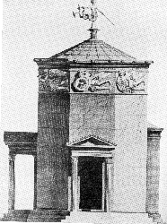

<html>
<head>
<title>The Annotated "Franklin's Tower"</title>
</head>
<body>
<i>"If you get confused, listen to the music play"</i>

<h2>The <i>Annotated</i> "Franklin's Tower"</h2>
An installment in <a href="gdhome.html"> The
<i>Annotated</i> Grateful Dead Lyrics.</a><br>
By <a href="david.html">David Dodd</a><br>
Research Associate, Music Dept., University of California, Santa Cruz
<hr>
<a href="copyrigh.html">Copyright notice</a>
<hr>
<ul>
<li><a href="http://grateful.dead.net/RobertHunterArchive.html/hunterarchive.html" target="new">Robert Hunter</a>, in his <a href="fauthrep.html">response</a> to <a href="jurgen.html">Jurgen Fauth's essay</a>, explicates his own lyric.
<li>Andrew Shalit's wonderful <a href="shalit.html">deconstruction</a> of the lyric is here.
</ul>
<hr>
<a href="#title"><b>"Franklin's Tower"</b></a><br>
Words by Robert Hunter; music by Jerry Garcia<br>
Copyright Ice Nine Publishing; used by permission
<p>
<blockquote>
<a href="#morrison">In another time's</a> forgotten space<br>


your eyes looked through your mother's face<br>


Wildflower seed on the sand and stone<br>


may the four winds blow you safely home <br>


<p>


<a href="#dew">Roll away ... the dew</a><br>


Roll away... the dew<br>


Roll away... the dew<br>


Roll away... the dew<br>


<p>


You ask me where the <a href="#winds">four winds</a> dwell<br>


In <a href="#franklin">Franklin's</a> <a href="#tower">tower</a> there hangs a bell<br>


It can ring, turn night to day<br>


Ring like fire when you lose your way<br>


<p>


Roll away... the dew . . .<br>


<p>


God help the child who rings that bell<br>


It may have one good ring left, you can't tell<br>


One watch by night, one watch by day<br>


If you get confused just listen to the music play<br>


<p>


Roll away... the dew . . .<br>


<p>


Some come to laugh their past away<br>


Some come to make it just one more day<br>


Whichever way your pleasure tends<br>


<a href="#plant">if you plant ice you're gonna harvest wind</a><br>


<p>


Roll away... the dew . . .<br>


<p>


In Franklin's Tower the four winds sleep<br>


Like <a href="#hounds">four lean hounds</a> the <a href="http://www.yahoo.com/Arts/Architecture/Lighthouses/" target="new">lighthouse</a> keep<br>


Wildflower seed in the sand and wind<br>


May the four winds blow you home again<br>


<p>


Roll away... the dew<br>


Roll away... the dew<br>


Roll away... the dew<br>


Roll away... the dew<br>


You better roll away the dew<br>


</blockquote>


<hr>


<h3><a name="title">"Franklin's Tower"</a></h3>


Recorded on


<ul>


<li><a href="discog1.html#allah"><cite>Blues For Allah</cite></a>


<li><a href="discog1.html#deadset"><cite>Dead Set</cite></a>

<li><a href="discog2.html#vault1"><cite>One From the Vault</cite></a>


<li><a href="discog2.html#net"><cite>Without a Net</cite></a>


<li><cite><a href="discog1.html#dick3">Dick's Picks, Vol. 3</a></cite>.


</ul>


<p>


First performance: <a href="http://www-cgi.cs.cmu.edu/afs/cs.cmu.edu/user/mleone/web/gdead/setlists/dead-sets/75/6-17-75.txt" target="new">June 17, 1975</a>


 at Winterland, San Francisco. This was the


"Bob Fried Memorial Boogie", and the Dead's show included the first <a href="crazy.html">


"Crazy Fingers"</a> and the first <a href="help.html">"Help On the Way."</a> The tune has remained


in the repertoire since.


<p>


Covered by


<ul>


<li>Wartime, a collaboration of <a href="http://www.st.nepean.uws.edu.au/~alf/rollins/" target="new">Henry Rollins</a> and Andrew Weiss,


 on <cite>Fast Food For Thought</cite> (1990)


<li>Steel Pulse on <cite><a href="tribute.html#fire">Fire On the Mountain</a></cite>


</ul>
<hr>
<h3><a name="morrison">In another time's...</a></h3>
This note from a reader:
<blockquote>
Subject: The Annotated Franklin's Tower<br>
Date: Tue, 28 Aug 2001 14:10:34 -0500<br>
From: "P B" <purleybaker@hotmail.com>
<p>
David,<br>
What a fantastic website!  It has certainly enhanced my enjoyment of Robert
Hunter's lyrics.  I thought of Franklin's Tower this morning on the way to
work while listening to the last several lyrics of Van Morrison's Astral
Weeks:
<p>
<blockquote>
In another time	<br>
In another place<br>
In another time	<br>
In another place <br>
In another face	<br>
</blockquote>
<p>
After considering more carefully at the lyrics of each song, it occurred to
me that they share the theme of a lifelong spiritual journey to
enlightenment ("may the four winds blow you home again"; "I got a home on
high in another land so far away...way up in the heaven").  Morrison's
guiding light is a woman, presumably his wife at the time Janet Planet,
while Hunter's seems to be music.  I haven't run across anything to suggest
that Morrison influenced Hunter, but now I wonder if there was a connection.
<p>
Take care,<br>
Carl Desenberg
</blockquote>
<hr>


<h3><a name="winds">four winds</a></h3>


In Greek mythology, according to <cite><a href="http://info.desy.de/gna/interpedia/greek_myth/bullfinch" target="new">Bullfinch's Mythology</a></cite>:


<blockquote>


[The winds were] "Boreas or Aquilo, the north wind; Zephyrus or Favonius,


the west; Notus or Auster, the south; and Eurus, the east."--p. 176.


</blockquote>


<p>


Here's a list of definitions of the wind gods from <cite><a href="http://www.io.org/~untangle/mythtext.html" target="new">Mythtext</a></cite>,


a web site:


<blockquote>


<ul>


<li>Zephyrus: Greek god of the west wind. Son of Astraios and Eos. Believed to live in a cave in Thrace. Known to


the Romans as Favonius.


<li>Boreas: Greek god of the north wind. According to Hesiod's Theogony, he was of Thracian origin, the son of


Eos and Astraeos. He was the father of many famous horses, including those of Ares and Achilles.


Boreas incurred the enmity of the Athenians when he abducted Oreithyia, the daughter of King


Erechtheus of Athens, whom he made his wife. He was said to have atoned for this deed by sending a


storm which destroyed a Persian fleet on its way to attack Athens. In gratitude, the Athenians built a


temple dedicated to him, and held a festival in his honour, the Boreasmos.


<li>Notus: Greek god of the south wind. In Greece, the south wind blows mainly in the autumn. Son of Astraeus


and Eos. Known to the Romans as Auster.


<li>Eurus: Greek god of east wind. Son of Eos, possibly by Astraeus. Sometimes equated by the Romans with


Volturnus, the god of the river Tiber.


</ul>


</blockquote>





Illustration by Stuart-Revett, from <cite>OIKIA KRPPHETOR: Studien zum sogennannten Turm der


Winde in Athen</cite>, Rome: Giorgio Bretschneider, 1983.<br>


<p>


A reader, Paul Rolnick, wrote to alert me to the presence of a "Tower of Winds," in <a href="http://www.vacation.forthnet.gr/athens.html" target="new">Athens</a>,


located on the Agora. It is an eight-sided (<a href="eleven.html">"The Eleven"</a>?!) tower


constructed ca. 100-35 B.C.E. A frieze depicting the eight winds (yes, eight) runs along the


top of the tower, which was used as a giant hydraulic timepiece. Thanks, Paul!


<p>


For a set of images of the tower, see <a href="http://www.indiana.edu/~kglowack/Athens/RATW.html" target="new">Kevin Glowacki's page</a>/


<p>


Pursuing that tidbit, I also stumbled across a Tower of the Winds in the Vatican, built by


Gregory XIII, and known as the "Torre dei Venti." So, the idea of the winds living in a tower


seems to be ancient and pervasive.


<p>


There is also a Biblical reference to the four winds, in <a href="http://ccel.wheaton.edu/wwsb/Zechariah/2.html" target="new">Zechariah, Chapter 2</a>,


v. 6: "I have spread you abroad as the four winds of heaven."


<p>


<a href="http://cdnow.com:445/cgi-bin/mserver/SID=NEW/dm=t/pg=2/page=popsearch/amgart=71595/artlcc=1518+77378+4" target="new">Fats Domino</a>


 had a hit with a song entitled "Let the Four Winds Blow."


</blockquote>


<p>


This note from another reader:


<blockquote>


Date: Tue, 5 Dec 1995 10:59:28 -0800<br>


From: Michael Zelner <michaelz@zoka.com><br>


Subject: Franklin's Tower lyric


<p>


DD:


<p>


I received a kind e-mail thank-you today from a reader of r.m.gd in


response to my posting the text of a newspaper article there. She ended her


note with the following:


<p>


> May the forewinds blow you safely home!


<p>


Huh, I thought. I always heard it as "four winds." I don't have the sheet


music in front of me, but I think it's that way there, too. So of course I


went to your Annotated Lyrics Web page to check, and you have it as "four


winds" also.


<p>


But then I got to thinking, why <em>not</em> "forewinds?" I looked it up in the <cite>OED</cite>:


<blockquote>


"Forewind (Obs.) Also for-. [f. FORE -  pref. + WIND sb. Cf. Du. voorwind]


A wind that blows a ship forward on her course, a favourable wind."


</blockquote>


So I learned something new today -- hope you did, too.


<p>


MZ


<pre>


_________________________


Michael Zelner


Oakland CA USA


e-mail: michaelz@zoka.com


_________________________


</pre>


</blockquote>


<hr>


<a name="dew"><h3>Roll away the dew</h3></a>


Compare the folksong <a href="http://pubweb.parc.xerox.com/digitrad/song=MORNDEW" target="new">"Blow Away the Morning Dew"</a>, (Child No. 112) with its refrain:


<blockquote>


"Sing, blow away the morning dew, <br>


the dew and the dew"


</blockquote>


<p>


There is also the traditional celtic tune, <a href="http://www.ece.ucdavis.edu/~darsie/morning_dew.gif" target="new">"The Morning Dew"</a>,


here in notation via <a href="http://www.ece.ucdavis.edu/~darsie/tunebook.html" target="new">the Tune Web</a>.
<p>
This email from a reader:<br>
<blockquote>
Subject: roll away the dew...<br>
Date: Fri, 17 Sep 1999 07:19:36 PDT<br>
From: "Dominic Mastroianni" <dmastroia@hotmail.com><br>
<p>
Hi David,<br>
This morning I was reading "A Midsummer Night's Dream" and some lines
(117-18) from 4.1 caught my eye. Theseus is describing his hounds,
which "are bred out of the Spartan kind," and he states, "their heads are
hung/With ears that sweep away the morning dew."  A link to
"Franklin's Tower," with its "roll away the dew" and "four lean hounds?" To make
the case stronger, these lines are preceded by a few from Hippolyta (his
betrothed), who recalls the barking of "hounds of Sparta" - "I never
heard/So musical a discord, such sweet thunder" - an uncanny
description of how the Dead can sound. Feel free to use this on your site if you
think it's worth noting. Take care, and thanks for all the work you've done to
help illuminate the songs.<br>
--Dom Mastroianni
</blockquote>

<hr>
<a name="franklin"><h3>Franklin's</h3></a>
This note from a reader:
<blockquote>

From: mattrob487@aol.com [mailto:mattrob487@aol.com]<br>
Sent: Thursday, November 20, 2003 1:01 AM<br>
Subject: concerning Franklin's Tower in your annotated web page<br>
<br>

What do you think about the definition of a Franklin:
<blockquote>
<pre>
Main Entry: frank·lin
Pronunciation: 'fra[ng]-kl&n
Function: noun
Etymology: Middle English frankeleyn, from Anglo-French fraunclein, from Old French franc
Date: 14th century
: a medieval English landowner of free but not noble birth
</pre>
</blockquote>
<br>
It sounds as if Hunter is describing a tower on a free person's land, probably surrounded by feudal lords.  So in "God save the child that rings that bell..."  Hunter is referring to freedom?
<br>
Thanks for the website.  It rocks!!!!
<br>
_________________________________________<br>
Matthew Robertson<br>


</blockquote>
<hr>
<a name="tower"><h3>tower</h3></a>
This note from a reader:
<blockquote>
Date: Fri, 2 Dec 2005 11:10:56 -0500<br>
From: Dave Gomolka <dgomolka@ebeamservicesinc.com><br>
To: ddodd@well.com<br>
Subject: franklins tower<br>
<p>
Hi Dave,
<p>
For some reason Franklins Tower just popped into my head and I thought I
would do a little web search on those two words.  I found a site
regarding a lighthouse [Pigeon Point] in California.  I wonder if Hunter might have had
a bit of this in mind when he penned the lyrics.
<p>
Here is the site:
<p>
<a href="http://www.lanternroom.com/lighthouses/california/cal34.htm">http://www.lanternroom.com/lighthouses/california/cal34.htm</a>
<br>
[Note the salient sentences: "The conical-shaped masonry structure remains in a good state of preservation despite it's many years of service. Though the sentinel stands where the British ship  Sir John Franklin  was wrecked shortly before the tower was built, the point bears the name of an earlier shipwreck. The  Franklin ran afoul of the rocks in January 1865 and the captain and crew perished."]
<p>
Your site is very interesting; I just wish I had more time to peruse....
I experienced the Dead many times from 77 to @ 90 and it was always a
spiritual journey....
<p>
Thanks,
<p>
David Gomolka

</blockquote>

<hr>

<a name="plant"><h3>if you plant ice you're gonna harvest wind</h3></a>


Compare the Biblical quotation from <a href="http://ccel.wheaton.edu/wwsb/Hosea/8.html" target="new">Hosea, Chapter 8</a>, verse 7:


<blockquote>


"For they have sown the wind, and they shall reap the whirlwind."


</blockquote>

<hr>
<a name="hounds"><h3>four lean hounds</h3></a>
This note from a reader:
<blockquote>
Subject: Franklin's Tower - "...four lean hounds..."<br>
Date: Tue, 10 Feb 1998 20:24:40 EST<br>
From: Plnnr@aol.com<br>
<p>
Dear David:
<p>
I visited your annotation site today for the first time in many moons.  I'm
glad to still see that it is up and running.
<p>
While looking through Bartlett's today I came across a familiar phrase that
just blew my mind - "four lean hounds."  It is from an e. e. cummings poem.
Sorry that I didn't write the entire reference down, but I figured you would
have your own copy of Bartlett's and could do the leg work.
<p>
Again, I'm glad to see that the site is still expanding.  That is certainly a
testament to Hunter's and Barlow's "well-readedness."
<p>
Take care.  I'll write again as things flash by.
<p>
Lee Tyson
</blockquote>
<p>
Here's the quote (and for more on Hunter's allusion, see his <a href="fauthrep.html">explication</a> of the lyric):
<blockquote>
"four lean hounds crouched low and smiling<br>
my heart fell dead before."<br>
--<a href="http://members.tripod.com/~DWipf/cummings.html" target="new">e.e. cummings</a>, <a href="http://www.cs.umb.edu/~kb/ee.c/1923.Tulips-and-Chimneys/06.all-in-green-went-my-love-riding" target="new">"All in green went my love riding."</a> (1923)
</blockquote>
<hr>


keywords: @music


DeadBase code: [FRAN]


<hr>


First posted: March, 1995<br>


Last revised: December 5, 2005


<pre>


</pre>


</body>


</html>


